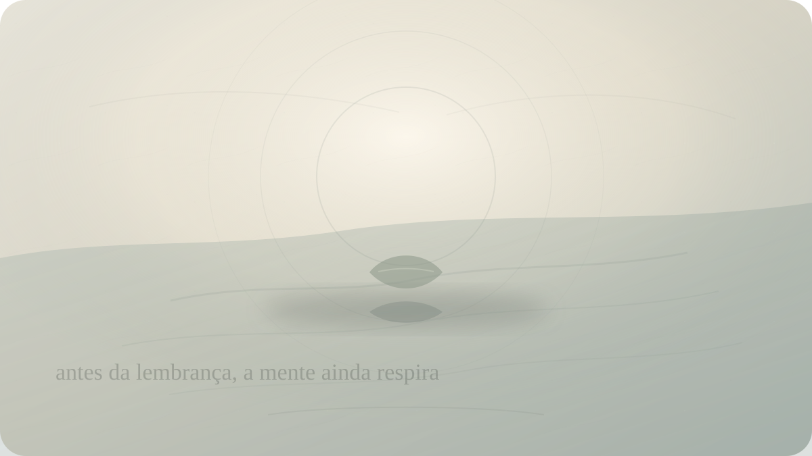

Identidade
O que resta quando você para de se examinar pelo passado?
Tilopa e a possibilidade de repousar antes da história que a mente insiste em repetir.

Há pessoas que não vivem apenas com memória; vivem sob interrogatório da memória. Uma cena antiga volta e exige explicação. Uma escolha passada reaparece como prova de caráter. Uma versão de si, talvez mais fraca, mais ingênua, mais dependente ou mais ferida, continua sendo chamada para depor. A mente monta um tribunal sem fim e chama isso de autoconhecimento.
Olhar para o passado pode ser necessário. Sem memória, não há aprendizagem, reparação, responsabilidade ou continuidade. O problema começa quando a investigação vira cárcere. A pessoa já não se lembra para compreender; lembra para confirmar uma identidade. Sou assim porque aquilo aconteceu. Sou culpado porque fiz isso. Sou incapaz porque falhei. Sou abandonável porque fui deixado. Sou meu trauma, minha perda, minha vergonha, minha explicação.
Tilopa, mestre indiano ligado à tradição mahāmudrā, entra nesse ponto de modo radical. Seus ensinamentos a Nāropa, preservados na tradição tibetana, não oferecem uma análise psicológica longa. Eles apontam para algo mais direto: a mente, quando não é continuamente fabricada por apego, aversão, memória e controle, pode repousar em sua própria natureza.
Essa linguagem pode soar distante. Mahāmudrā pertence a uma linhagem contemplativa sofisticada, com contexto, transmissão e prática. Não deve ser reduzida a uma técnica de bem-estar ou a uma frase para redes sociais. Ainda assim, há uma pergunta humana que atravessa esse ensinamento: o que acontece quando você para, por um instante, de construir a si mesmo a partir do que já passou?
As chamadas seis palavras de Tilopa, em traduções modernas, costumam ser apresentadas como: não recordar, não imaginar, não pensar, não examinar, não controlar, repousar. A fórmula é curta demais para ser domesticada. Ela não diz: apague sua história. Não diz: seja irresponsável. Não diz: pare de sentir. Ela corta uma compulsão mais sutil: a tendência de fabricar identidade a cada movimento mental.
Não recordar, aqui, não significa perder a memória. Significa não agarrar o passado no momento da prática. A memória pode aparecer. Uma imagem surge, uma frase antiga, uma dor, uma saudade. A instrução não é destruir a imagem nem segui-la. É não transformar imediatamente aquilo que aparece em uma narrativa sobre quem você é.
Essa diferença parece pequena, mas muda o mundo interno. Quando surge a lembrança de uma humilhação, a mente costuma completar: eu sou pequeno. Quando surge a lembrança de abandono: ninguém fica. Quando surge a lembrança de um erro: sou imperdoável. Quando surge a lembrança de felicidade perdida: minha vida verdadeira ficou para trás. A memória não apenas informa; ela define.
Tilopa interrompe esse mecanismo. A lembrança pode surgir sem precisar tornar-se identidade. O pensamento pode aparecer sem receber o trono. A emoção pode atravessar sem virar destino. A mente pode conhecer um conteúdo sem se confundir completamente com ele.
Isso não é simples. Muitas identidades dolorosas são, paradoxalmente, familiares. Sofremos com elas, mas também sabemos como existir nelas. A pessoa que se define pela ferida tem uma explicação para tudo. A que se define pela culpa sabe onde se colocar. A que se define pela perda mantém uma fidelidade amarga ao que se foi. Soltar essas identidades pode parecer traição de si mesmo.
Talvez por isso Tilopa não proponha primeiro substituir uma história por outra melhor. Ele não diz: conte uma narrativa mais positiva. Não diz: pense diferente. A instrução vai antes da narrativa. Ela pergunta se a mente consegue repousar antes de se organizar em personagem.
Repousar, nesse contexto, não é passividade vazia. É abandonar, por um instante, a tentativa de manipular a experiência. Normalmente queremos consertar a mente com a própria mente: analisar cada sensação, rastrear cada causa, prever cada ameaça, fabricar uma versão aceitável de nós. Até o autoconhecimento pode virar controle.
Há uma forma de examinar-se que ilumina. E há uma forma de examinar-se que fere repetidamente a mesma pele. A diferença está na qualidade da atenção. A primeira vê para libertar. A segunda vê para confirmar prisão. Quando você revisita o passado, está buscando verdade ou apenas renovando uma sentença?
A tradição mahāmudrā usa muitas vezes a imagem do céu. Nuvens passam, mas não ferem o céu. Pensamentos passam, mas a natureza da mente não precisa ser reduzida a eles. A metáfora pode parecer bonita demais até ser posta à prova. Porque, quando uma dor forte aparece, não sentimos nuvens; sentimos tempestade. O corpo acredita. A história volta inteira.
Mesmo assim, a imagem aponta para uma possibilidade: talvez aquilo que surge na mente não seja toda a mente. Talvez a raiva, a vergonha, o medo, a lembrança e o desejo sejam eventos, não a totalidade do espaço onde aparecem. Se isso for minimamente percebido, a identidade perde parte de sua rigidez.
O passado tem uma habilidade tirânica: ele fala com voz de essência. “Você sempre foi assim.” “Você nunca muda.” “Aquela cena prova tudo.” “Aquela perda definiu sua vida.” “Aquela escolha encerrou suas possibilidades.” A mente acredita porque a memória traz imagens, sensações, detalhes. O passado parece mais real que o presente.
Mas o presente tem algo que o passado não tem: abertura. O passado pode informar, condicionar, ferir, ensinar. Não pode agir agora sem sua colaboração atual. Ele precisa ser reativado, contado, acreditado, obedecido. Muitas vezes, não sofremos apenas pelo que aconteceu; sofremos pela renovação diária da identidade construída em torno do que aconteceu.
Tilopa não pede que você negue causas e condições. Seria absurdo. A história molda o sistema nervoso, os vínculos, a confiança, a linguagem interna. Traumas e perdas deixam marcas reais. Filosofia contemplativa não substitui cuidado clínico, terapia, corpo, comunidade e proteção. Mas também é verdade que, em certos momentos, a mente acrescenta ao ferimento uma repetição incessante de si mesma.
A instrução “não imaginar” também importa. A identidade não é feita apenas de passado; é feita de futuros projetados. A pessoa pensa: se fui abandonado, serei abandonado. Se falhei, falharei. Se fui ferido, serei ferido. O passado fornece o material, o futuro fornece a prisão. Entre os dois, o presente fica estreito.
Não imaginar, portanto, não significa abandonar responsabilidade. Significa perceber quando a mente usa o futuro para eternizar o passado. A previsão deixa de ser prudência e vira profecia emocional. Você não está vendo o amanhã; está vendo uma lembrança vestida de amanhã.
Não examinar, talvez, seja a instrução mais desconfortável para quem se orgulha da própria lucidez. Vivemos em uma época que valoriza análise de si. Nomeamos padrões, traumas, estilos de apego, defesas, feridas, gatilhos. Isso pode ser útil e necessário. Mas também pode criar uma identidade excessivamente monitorada, onde a pessoa nunca descansa de ser objeto de estudo.
Há um cansaço em se observar o tempo todo. A pessoa já não sente apenas tristeza; ela interpreta a tristeza. Já não ama; avalia se está repetindo padrão. Já não descansa; pergunta se a necessidade de descanso indica fuga. Já não conversa; observa sua própria performance emocional. A vida vira relatório interno.
Tilopa corta essa compulsão com uma elegância quase brutal: não examine. Não porque compreender não tenha valor, mas porque há momentos em que a busca por compreensão é mais uma forma de agitação. A mente quer resolver-se como problema. Talvez, por um instante, ela precise deixar de se tratar como defeito.
Não controlar completa o movimento. A identidade baseada no passado tenta controlar para impedir repetição da dor. Controla a imagem, os vínculos, a vulnerabilidade, o corpo, o desejo, a narrativa. Mas o controle constante mantém a ferida no centro. A vida passa a ser administrada em torno daquilo que já aconteceu.
Repousar não apaga o passado. Repousar tira o passado do volante por um momento. A lembrança pode estar ali, mas não precisa dirigir. A emoção pode estar ali, mas não precisa nomear toda a pessoa. A história pode estar ali, mas não precisa ocupar todo o céu.
Isso é difícil porque parece não fazer nada. E a mente ferida quer fazer algo: entender, corrigir, vigiar, melhorar, prever. Repousar parece negligência. Mas às vezes é a primeira experiência de não colaborar com a própria prisão.
Na prática, talvez o convite seja simples e quase impossível: quando uma velha história surgir, não corra para completá-la. Perceba a imagem. Perceba o corpo. Perceba o impulso de concluir quem você é. E, por alguns segundos, não conclua. Deixe a mente sem sentença.
Pode haver medo nesse intervalo. Se eu não sou minha história, quem sou? Se não me examino pelo passado, como vou saber que não repetirei tudo? Se não controlo, o que impede a dor de voltar? Essas perguntas são legítimas. Mas talvez uma vida inteira construída como defesa contra a repetição da dor também seja uma forma de repetição.
Tilopa aponta para uma liberdade que não depende de apagar o passado, mas de não transformá-lo em fundamento absoluto da identidade. Você continua tendo história. Mas talvez não precise ser fabricado por ela a cada instante.
O que resta, então, quando você para de se examinar pelo passado? Talvez, no começo, apenas silêncio. Depois, talvez respiração. Depois, uma presença sem biografia imediata. Não uma resposta grandiosa, não um eu superior, não uma iluminação teatral. Apenas o alívio estranho de não precisar terminar a frase “eu sou...” com a velha dor.
E talvez isso baste por um instante: existir antes da explicação.
A pergunta final permanece aberta, como céu sem borda: se você deixasse sua história repousar sem transformá-la em identidade, quem estaria aqui antes da próxima lembrança?
Pergunta final
Se você deixasse sua história repousar sem transformá-la em identidade, quem estaria aqui antes da próxima lembrança?
Fontes e leituras
- TILOPA. The Ganges Mahāmudrā Instructions. Tradução disponível em Lotsawa House.
- TILOPA. Pith Instructions on Mahāmudrā / Ganges Mahamudra. Tradução e comentários na tradição Kagyu.
- Unfettered Mind. Mahamudra — Tilopa's Six Words, tradução e comentário de Ken McLeod.
- Samye Translations. The Ganges Mahamudra Pith Instruction.
- DOWMAN, Keith. Tilopa's Mahamudra Teaching to Naropa.
- TRUNGPA, Chögyam. The Myth of Freedom and the Way of Meditation.
Leituras relacionadas
E você, o que está sentindo agora?
Escolha seu momento e encontre uma reflexão filosófica para atravessá-lo com mais clareza.
Encontrar uma reflexão